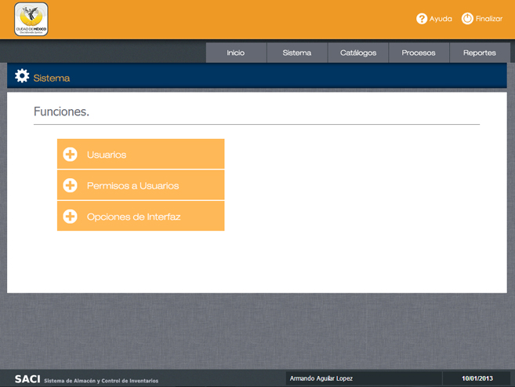
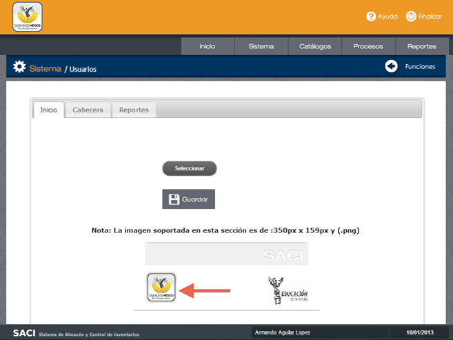
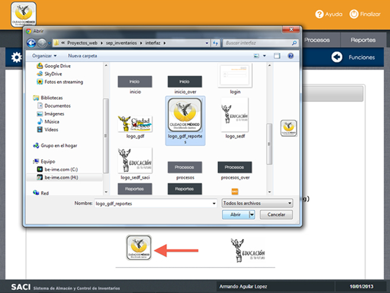
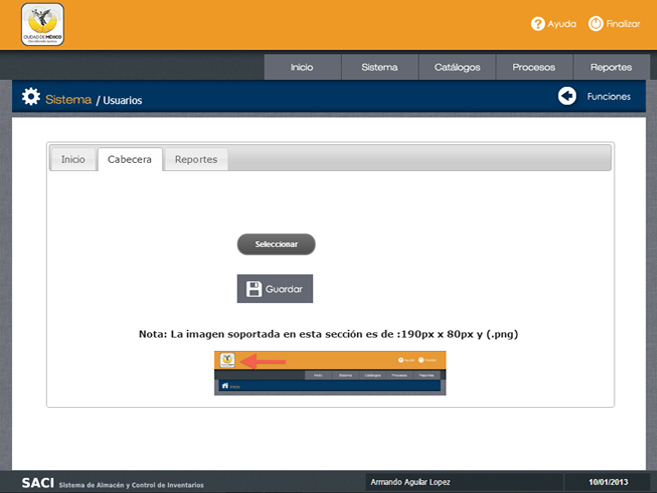
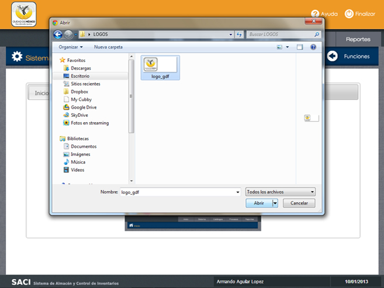
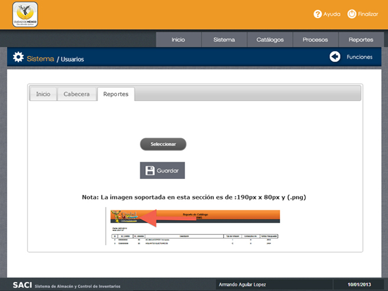
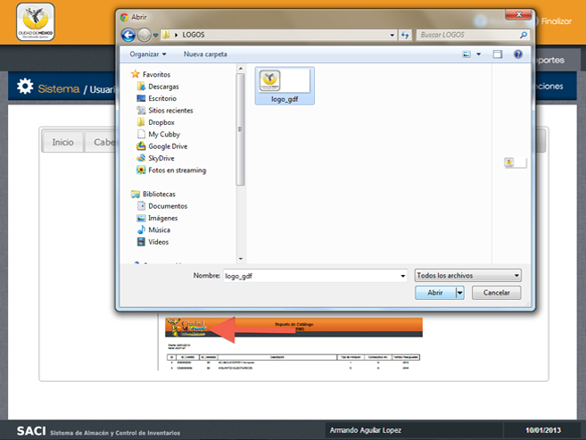

/ Permisos a Usuarios.

Paso 1.
Para realizar modificaciones en la interfaz, haga clic en el cceso "Opciones de Interfaz".
Para realizar modificaciones en la interfaz, haga clic en el cceso "Opciones de Interfaz".
Opciones de Inicio.
Paso 1. Situese en la ficha "Inicio" y haga clic en Seleccionar.

Opciones de Inicio.
Paso 2. Seleccione la imagen o logotipo que desea colocar en la pantalla de Inicio y haga clic en "Abrir".
Paso 3. Una vez cargada la imagen haga clic en Guardar para realizar los cambios.
Paso 2. Seleccione la imagen o logotipo que desea colocar en la pantalla de Inicio y haga clic en "Abrir".
Paso 3. Una vez cargada la imagen haga clic en Guardar para realizar los cambios.
Objetivo.
Esta pantalla tiene por objeto modificar los logotipos de la cabecera del sistema, logotipos de la pantalla de inicio y logotipo y cabecre de los reportes.
Esta pantalla tiene por objeto modificar los logotipos de la cabecera del sistema, logotipos de la pantalla de inicio y logotipo y cabecre de los reportes.

Opciones de Cabecera.
Paso 1. Situese en la ficha "Cabecera" y haga clic en Seleccionar.

Opciones de Cabecera.
Paso 2. Seleccione la imagen o logotipo que desea colocar en la cabecera y haga clic en "Abrir".
Paso 3. Una vez cargada la imagen haga clic en Guardar para realizar los cambios.
Paso 2. Seleccione la imagen o logotipo que desea colocar en la cabecera y haga clic en "Abrir".
Paso 3. Una vez cargada la imagen haga clic en Guardar para realizar los cambios.

Opciones de Reportes.
Paso 1. Situese en la ficha "Reportes" y haga clic en Seleccionar.

Opciones de Reportes.
Paso 2. Seleccione la imagen o logotipo que desea colocar en los reportes y haga clic en "Abrir".
Paso 3. Una vez cargada la imagen haga clic en Guardar para realizar los cambios.

Navegación.
Par volver al Menú y opciones del Sistema utilice el botón "Funciones" o directamente el botón "Sistema".